Title: DoE in cultivated meat: insulin and ascorbic acid in adipogenic differentiation medium, calcium chloride chloride in alginate scaffold
Author: Noorul H. Ali, MS (bioengineering), Tufts University, Medford, MA 02155, United States
Correspondence: noorul.ali@tufts.edu
Abstract
Introduction
Methods
Results
Discussion
References
Appendix
Lipid storage is an important aspect of fat cells. Fat is necessary for cultured meat to resemble tradiBonal meat in texture and “mouth-feel”. Lipid storage is performed by adipocyte cells. Differentiation of cells into adipocytes is affected by insulin and ascorbic acid. Here, slightly posiBve effects of insulin and ascorbic acid on lipid storage are reported. Alginate hydrogels have demonstrated usage in industry as biomaterial scaffolds and food gels. Here, alginate hydrogel scaffolds are seeded with adipocytes and compared to ground beef in texture characteristics.
Fat is central to meat. Fat imbues muscle with the flavor and texture of meat. It renders while cooking, oxidizing to improve the texture of meat. It is significantly important for meat's overall flavor profile and palatability. In cultured meat, muscle and fat cells are layered on a scaffold to resemble meat derived from livestock (traditional meat) in texture and structure. Optimal amounts of lipids in fat cells, called adipocytes, are an important requirement of cultured meat. Lipid-encapsulating adipocyte cells form layers of fat on a scaffold. These cells are used downstream when layering muscle and fat cells into cultured meat. The accumulation of lipids in these adipocytes is thus of significant importance to the usability of cultured meat. Optimizing media to maximize accumulation of lipids in adipocytes is an active area of research. The scaffold in which fat cells are arranged is also of prime importance. This scaffold must also have properties that resemble traditional fat in meat. Similar textural and structural properties are necessary to give cultured meat a similar texture profile to traditional meat.
Design of experiment (DoE) is a methodology used to optimize medium formulations. It has been previously used to optimize medium formulations for the growth of cells. Cell growth is dependent on the medium cells are growing in. Different concentrations of medium components affect cell growth differently. There may be interactions between medium components as well. Design of experiment methodology varies concentrations of medium components in a specific paUern to study the dependence of cell growth on various medium components and their interactions. Multiple iterations of a medium are made. Each iteration differs in the concentration of certain medium components. Cell growth measurements are done for each medium formulation. These data are used to find optimal concentrations of medium components for highest cell growth. DoE methodology maps the dependence of each medium component to cell growth. Interactions between medium components that positively or negatively affect cell growth can be found using DoE. Here, we report usage of DoE methodology to find optimal concentrations of insulin and ascorbic acid for lipid accumulation in adipocyte cells. We varied the concentrations of insulin and ascorbic acid in accumulation medium to find their role in accumulation of lipids in bovine stromal vascular cells.
Alginate is a food-grade material that has been used to coat fruits and vegetables, as a microbial and viral protection product, and as a gelling, thickening, stabilizing or emulsifying agent [1]. Owing to its biocompatibility and nontoxicity, it has been used as a hydrogel and aerogel for wound dressings. Here, we use alginate hydrogel as a scaffold for fat cells. We perform texture profile analysis (TPA) on hydrogel scaffolds with and without fat cells. We compare the mechanical properties of our seeded scaffold with a traditional meat control.
Media preparation for lipid accumulation
25mL of induction medium was prepared with final concentrations of 90% Dulbecco's Modified Eagle Medium (DMEM), 10% fetal bovine serum (FBS), 250µg insulin, 1 µM dexamethasone, 0.5mM isobutylmethylxantine (IBMX), and 2 µM rosiglitazone. 9 accumulation medium formulations were prepared by varying concentrations of insulin and ascorbic acid. Concentrations of both were obtained using design of experiment (4-factor, RSM central composite design) in JMP sogware (JMP Statistical Discovery LLC). 100mL of base accumulation medium was prepared final concentrations of 500 µg/mL Intralipid and 10 µM biotin in DMEM. 9 media were formulated by dividing base accumulation medium equally adding varying amounts of insulin and ascorbic acid to each. The final concentrations of insulin in media ranged from 0µg/mL to 8µg/mL, while ascorbic acid ranged from 0 to 120µM (Table 1).
Media | Ascorbic Acid (µM) | Insulin (µg/mL) |
M1 | 120 | 4 |
M2 | 0 | 0 |
M3 | 120 | 8 |
M4 | 240 | 4 |
M5 | 120 | 0 |
M6 | 0 | 4 |
M7 | 240 | 0 |
M8 | 240 | 8 |
M1 | 0 | 8 |
Table 1: Lipid accumulation media formulations
Cell seeding and maintenance
Cryopreserved stromal vascular cells (SVCs) were thawed (37⁰C) and resuspended in growth medium (Gibco DMEM 1X + GlutaMAX) at 25,000 cells/mL. A 48-well plate was seeded with cells at a density of 7,500 cells/cm2. Growth medium was added to all wells till 90% confluency. Induction medium was added once and respective accumulation media were added every 3 days for two weeks. A T-175 flask was seeded with SVCs at a density of 4,100 cells/cm2 and fed growth medium till 90% confluency. Cells in the T-175 flask were then fed induction medium once and accumulation medium twice.
Oil Red O (ORO) staining and optical reading to test lipid accumulation
Fat cells in 48 well-plate were fixed in 4% formaldehyde (30 minutes). Wells were aspirated and rinsing thrice with 1X DPBS. 150µL of 1X propylene glycol was added to each well and removed. 150µL of heated ORO solution (60⁰C) was added to each well (7 minutes) and removed. 150µL of 85% propylene glycol was added to each well (1 minute). Cells were washed with distilled water. In a fume hood, 150 µL of 1X isopropanol was added to each well to elute the ORO stain. 100µL isopropanol supernatant from each well was transferred to a 96-well plate with two control wells containing 100µL isopropanol. Absorbance at 540nm was measured using a plate reader. Mean optical density measurements were used for each well because we had triplicated wells for each medium. The measurement was normalized by subtracting the mean measurement of control isopropanol wells.
Scaffold construction and seeding
Scaffold control was prepared with final concentrations 10% calcium chloride and 1.8% alginate in water. The amounts of calcium chloride were varied from 10µL to 300µL in fixed alginate solutions. Textures of formed hydrogels were observed under multiple temperatures (4⁰C, 22⁰C, 37⁰C) and media conditions (DPBS, standard growth medium, distilled water) for 1 week. Hydrogel formed with 10% calcium chloride most resembled fat extracellular matrix (ECM) and was chosen for seeding. Fat cells were scraped and collected from T-175 flask. Seeded scaffold was prepared mixing 5% calcium chloride, 0.9% alginate and 0.9% scraped fat cells.
Measurement of scaffold structural properties
Texture profile analysis was performed on control scaffold, seeded scaffold, and ground beef. Analysis tested for hardness, adhesiveness, resilience, cohesion, springiness, gumminess and chewiness. A portion of the sample was inserted into a texture profile analyzer (TA.XTPlus 100 Connect, Texture Technologies Corp. and Stable Micro Systems, Ltd.) to measure the mechanical properties listed above for each sample.
Insulin and ascorbic acid weakly promote lipid accumulation
Positive correlations are seen between both insulin and ascorbic acid concentrations and lipid accumulation in adipocytes (Table 2). This suggests both positively influence growth, though weakly as indicated by the low correlation scores. No correlation is observed between ascorbic acid and insulin concentrations. We find no evidence of insulin and ascorbic acid concentrations affecting cell growth or interaction between the two, evidenced by the null correlation score. Media with no insulin showed lower lipid accumulation (M2, M5). Only slightly lower lipid accumulation is observed in media without ascorbic acid and insulin (M2). Media without insulin (M2, M5) ranked lowest in lipid accumulation.
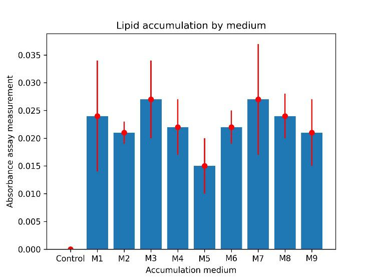
Figure 1: Optical density readings of eluted ORO stain. This reading is indicative of the quantity of lipids in cells. ORO is absorbed by lipids in cells and eluted from cells in the presence of isopropanol. Higher absorbance assay measurement indicates higher lipid accumulation. Readings are normalized by subtracting mean absorbance assay measurement of control well containing 1X isopropanol.
Correlation matrix | Lipid accumulation | Ascorbic acid | Insulin |
Lipid accumulation | 1 | 0.3565 | 0.3565 |
Ascorbic acid | 0.3565 | 1 | 0 |
Insulin | 0.3565 | 0 | 1 |
Table 2: Correlation matrix between ascorbic acid concentration, insulin concentration, and lipid accumulation. Numbers represent correlation scores between mean optical density readings, insulin, and ascorbic acid concentrations. Correlation score is a metric of how strongly two variables are linked in multivariate analysis. No correlation is observed between insulin and ascorbic acid. Both are equally important to lipid accumulation according to the same correlation score obtained for both with respect to lipid accumulation.
Seeded scaffold significantly differs from texture of ground beef
Control and seeded scaffolds (figure 9) differ significantly from ground beef (figures 2-8). Resilience and cohesion are relatively closer to ground beef control. Hardness, adhesiveness, cohesion, springiness, gumminess, and chewiness of both control and seeded scaffolds are significantly different from ground beef. These are mechanical properties calculated by stress and strain measurements done by the texture analyzer . Control and seeded scaffolds are relatively similar in texture characteristics.
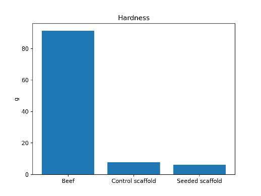
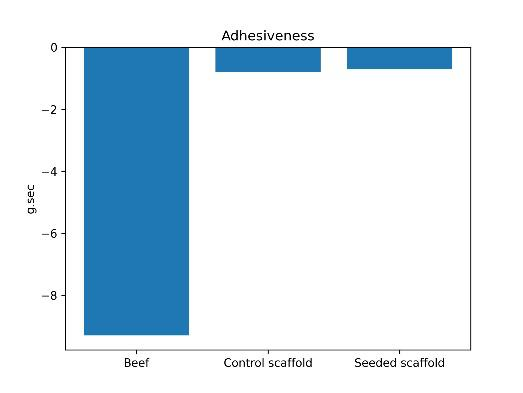
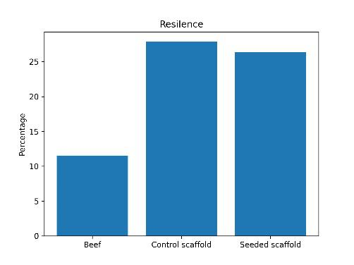
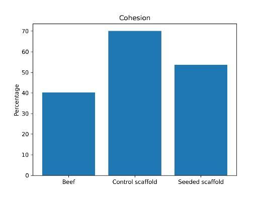
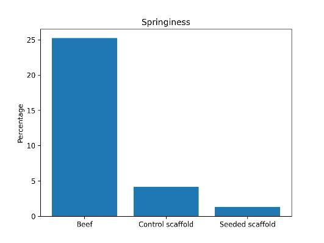
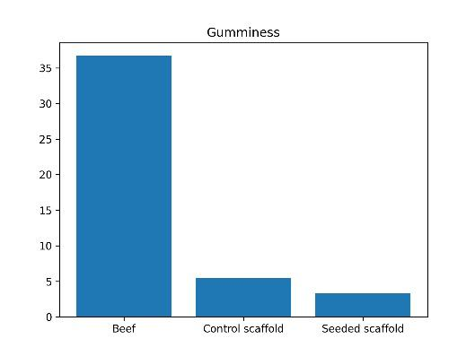
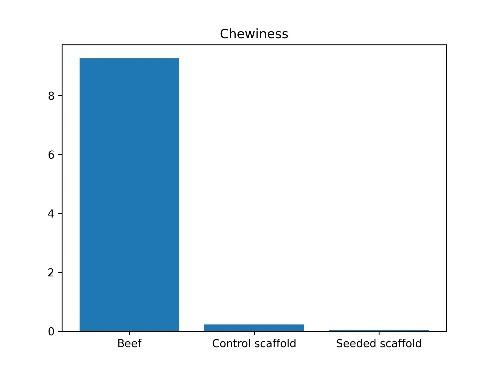
Figures 2-8: Texture profile comparisons between ground meat, alginate scaffolds seeded with and without cells (control) in terms of hardness, adhesiveness, resilience, cohesion, springiness, gumminess, and chewiness. Alginate control and seeded scaffolds differ significantly from control ground beef.
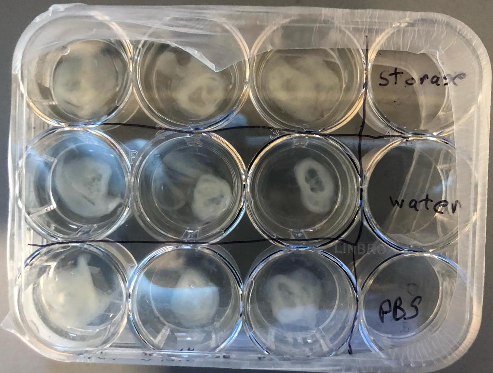
Figure 9: Unseeded alginate hydrogels in DPBS, water and no extra medium (storage)
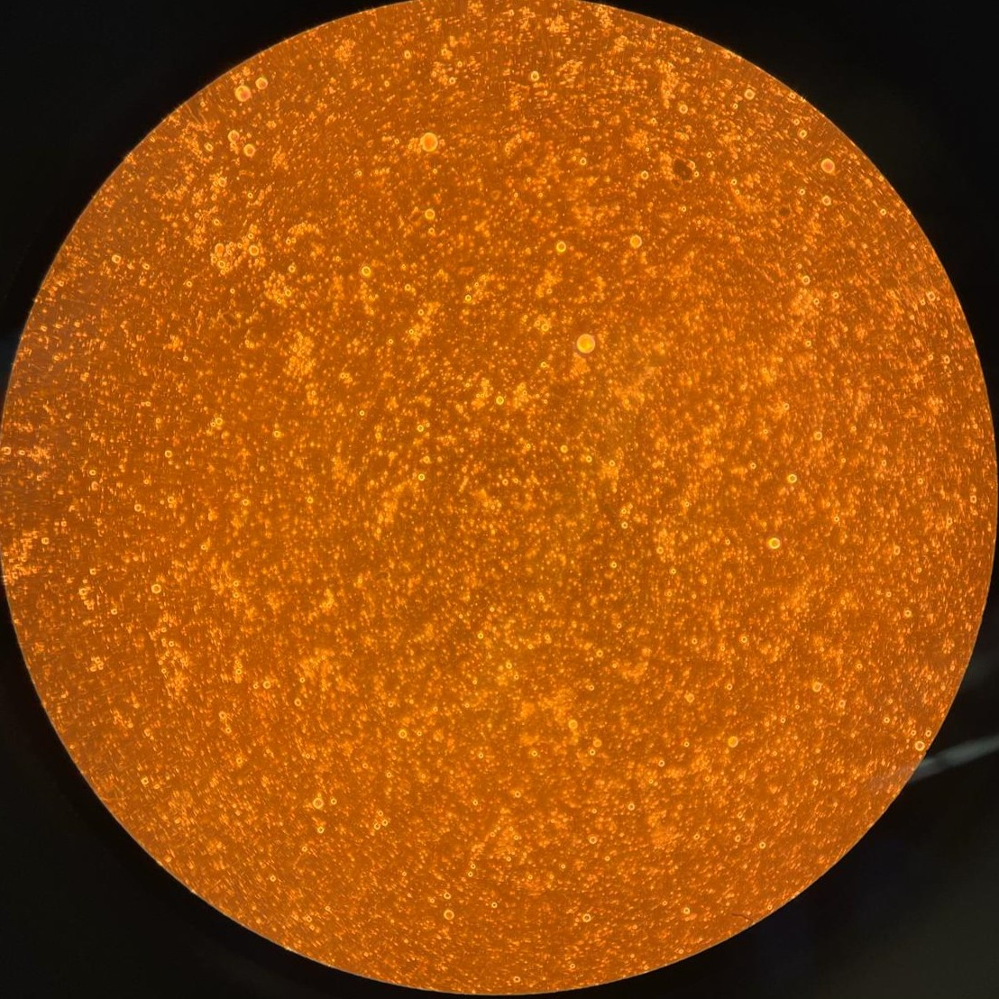
Figure 10: Cells in T-175 flask in adipogenic accumulation medium. Globules are seen, which may be adipocytes.
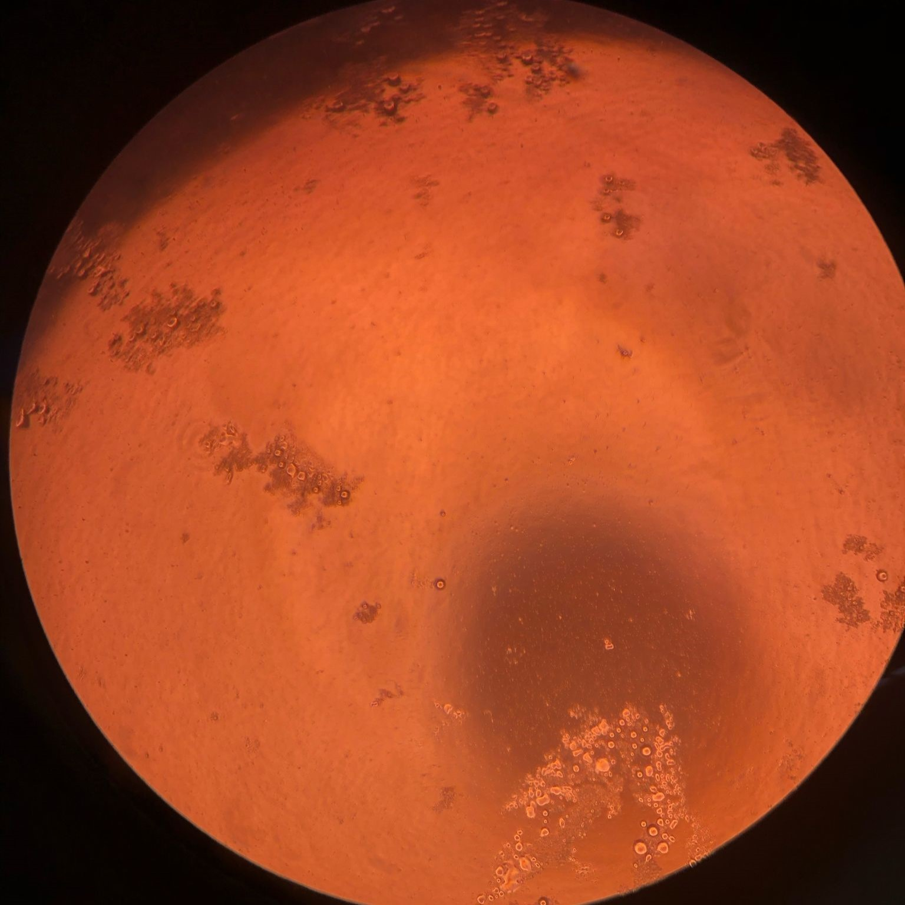
Figure 11: Cells in M7 adipogenic accumulation medium. This well had relatively high lipid accumulation. Some globules can be seen.
Insulin and ascorbic acid generally promote lipid storage
I observed lowest lipid storage in cells accumulating lipids in two media formulations without insulin. Insulin is implicated in adipogenesis and lipid storage. Peroxisome proliferator-activated receptor γ (PPARγ) is a ligand-dependent transcription factor highly expressed in adipocytes and a master regulator of adipogenesis and lipid storage [2]. It upregulates adipocyte-specific proteins. Insulin is involved in cross-talk with PPARγ [3]. It stimulates transcription factors involved in adipogenic differentiation. It also prevents lipolysis by inhibiting hormone-sensitive lipase. This seems to be one explanation for the observed lower lipid storage by cells in media without insulin. Lower adipogenic differentiation due to lack of insulin may be a cause for lower lipid content observed. For a future study, insulin may be varied along with cellular cycle arrest to observe its effects on differentiation, particularly the stage at which it is most effective at inducing adipogenic differentiation.
Ascorbic acid is implicated in transcription of FABP4 which is directly coupled to PPARγ. Increased expression of FABP4 is linked to greater lipid accumulation [4-10]. Ascorbic acid increases adipogenic differentiation. Wells with high lipid storage contained ascorbic acid.
3D fat constructs were prepared using alginate hydrogels seeded with stromal vascular cells. Alginate hydrogels serve the function of extracellular matrix (ECM) in which cells are embedded in traditional meat tissue. ECM consists of collagen and other materials. Alginate-derived hydrogels were selected for optimal texture resembling livestock-derived fat tissue and stability in different temperature and media. Optimal hydrogel was seeded with lipid-containing adipocytes. Texture profile analysis was performed to compare the mechanical properties of seeded and unseeded scaffolds with traditional ground meat. Texture profile analysis (TPA) is a popular double compression test for determining the textural properties of foods. It is occasionally used in other industries, such as pharmaceuticals, gels, and personal care. During a TPA test samples are compressed twice using a texture analyzer to provide insight into how samples behave when chewed. The TPA test was ogen called the "two bite test" because the texture analyzer mimics the mouth's biting action. Our scaffolds significantly differed in texture to ground beef. This was primarily because we selected a gel-like consistency in our manual selection of calcium chloride concentration in alginate solution. Alginate is a naturally derived polysaccharide. Calcium ions cause ionic crosslinking in alginate’s constituents by interacting with carboxylic groups. This forms 3D units insoluble in water, or hydrogels. We selected a relatively lower calcium concentration in the hydrogel. This significantly impacted hardness, adhesiveness, gumminess, springiness, and chewiness metrics because we selected for a gel-like consistency. Unlike traditional ground beef, the alginate hydrogel had higher cohesion and resilience. These metrics indicate how well a material regains its structure ager compression. Our gel-like hydrogel was much more fluid than ground beef hence had higher cohesion and resilience scores. Our scores for hardness, chewiness, gumminess, adhesiveness, and springiness were significantly different compared to ground beef because we selected for a gel-like consistency.
Further work can be done to improve texture profile metrics by varying concentrations of calcium chloride to form alginate hydrogels. Calcium chloride is linked to alginate gelation and its mechanical properties. A suitable concentration of calcium chloride that achieves similar texture profile metrics to ground beef may be useful as scaffold.
[1]: Gheorghita Puscaselu R, Lobiuc A, Dimian M, Covasa M. Alginate: From Food Industry to Biomedical Applications and Management of Metabolic Disorders. Polymers (Basel). 2020 Oct 20;12(10):2417. Link
[2]: Ma X, Wang D, Zhao W, Xu L. Deciphering the Roles of PPARγ in Adipocytes via Dynamic Change of Transcription Complex. Front Endocrinol (Lausanne). 2018 Aug 21;9:473. Link
[3]: Leonardini A, Laviola L, Perrini S, Natalicchio A, Giorgino F. Cross-Talk between PPARgamma and Insulin Signaling and Modulation of Insulin Sensitivity. PPAR Res. 2009;2009:818945. Link
[4]: Jurek, Sandra, Mansur A. Sandhu, Susanne Trappe, M. Carmen Bermúdez-Peña, Martin Kolisek, Gerhard Sponder, and Jörg R. Aschenbach. “Optimizing Adipogenic Transdifferentiation of Bovine Mesenchymal Stem Cells: A Prominent Role of Ascorbic Acid in FABP4 Induction.” Adipocyte 9, no. 1 (2020): 35–50. Link
[5]: Cuaranta-Monroy I, Simandi Z, Kolostyak Z, et al. Highly effcient differentiation of embryonic stem cells into adipocytes by ascorbic acid. Stem Cell Res. 2014. Link
[6]: Furuhashi M, Hotamisligil GS. Fatty acid-binding proteins: role in metabolic diseases and potential as drug targets. Nat Rev Drug Discov 7, 489-503 (2008). Link
[7]: Tontonoz P, Spiegelman BM. Fat and beyond: the diverse biology of PPARgamma. Annu Rev Biochem. 2008. Link
[8]: Garin-Shkolnik T, Rudich A, Hotamisligil GS, et al. FABP4 aUenuates PPARγ and adipogenesis and is inversely correlated with PPARγ in adipose tissues. Diabetes. 2014. Link
[9]: Ono M, Aratani Y , Kitagawa I, et al. Ascorbic acid phosphate stimulates type IV collagen synthesis and accelerates adipose conversion of 3T3-L1 cells. Exp Cell Res. 1990. Link
[10]: Lee OH, Seo DH, Park CS, et al. Puerarin enhances adipocyte differentiation, adiponectin expression, and antioxidant response in 3T3-L1 cells. Biofactors. 2010. Link